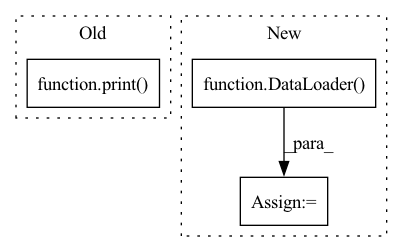

Pattern ID :31344
Before Change
//outputs_shape[1] = 25
print(f"Output shape: {outputs_shape}")
outputs = torch.zeros(tuple(outputs_shape),device="cpu")
print( "Computing outputs")
for i in range(len(dataset)):
print(i)
outputs[i,:,:,:,:] = model(dataset[i][0].unsqueeze(0).to(device)).cpu()
print("Output dataset")After Change
outputs_shape[0] = len(dataset)
outputs = torch.zeros(tuple(outputs_shape),device="cpu")
print("Collecting dataset")
tempDL = DataLoader( dataset, num_workers=3, batch_size=config["batch_size"], pin_memory=True)
counter = 0
for batch in tqdm(tempDL):
outputs[counter:counter+batch[0].shape[0],:,:,:,:] = model(batch[0].to(device)).cpu()In pattern: SUPERPATTERN
Frequency: 4
Non-data size: 3
Instances Fragment ID: 92020525
Project Name: aangelopoulos/im2im-uq
Commit Name: 24209675bca45046b9b83879e39f55f6ade5062c
Time: 2022-01-30
Author: angelopoulos@master.abc.berkeley.edu
File Name: core/calibration/calibrate_model.py
M Class Name: AnonimousClass
N Class Name: AnonimousClass
M Method Name: calibrate_model(3)
N Method Name: calibrate_model(3)
M Parent Class:
N Parent Class:
M File Name: core/calibration/calibrate_model.py
N File Name: core/calibration/calibrate_model.py
M Start Line: 99
M End Line: 122
N Start Line: 100
N End Line: 116
Before Change
best_acc = epoch_acc
best_model_weights = copy.deepcopy(model.state_dict())
print()
time_elapsed = time.time() - since
print("Training complete in {:.0f}m {:.0f}s".format(
time_elapsed // 60, time_elapsed % 60))After Change
data_set = data_loaders[phase]
data_set.set_negative_list(hard_negative_dict[phase])
sampler = CustomSampler(data_set.get_positive_num(), data_set.get_negative_num(), 32, 96)
data_loaders[phase] = DataLoader( data_set, batch_size=8, sampler=sampler, num_workers=8, drop_last=True)
// 每训练一轮就保存
save_model(model, "models/linear_svm_alexnet_car_%d.pth" % epoch)
Fragment ID: 92020527
Project Name: object-detection-algorithm/r-cnn
Commit Name: e2e3096890edf6bc8a4f52bea2fe56624e20be2c
Time: 2020-03-04
Author: 505169307@qq.com
File Name: py/linear_svm.py
M Class Name: AnonimousClass
N Class Name: AnonimousClass
M Method Name: train_model(7)
N Method Name: train_model(7)
M Parent Class:
N Parent Class:
M File Name: py/linear_svm.py
N File Name: py/linear_svm.py
M Start Line: 125
M End Line: 125
N Start Line: 78
N End Line: 151
Before Change
train_loader = DataLoader(tsds_train, batch_size=800, shuffle=True, num_workers=10)
for data in train_loader:
now = time.localtime()
print( time.strftime("%Y-%m-%d-%H_%M_%S", now))
// The dimension of sample is same as tabular data, but it will return timeseries data of the sample
// We have two method to get the time-series of a sampleAfter Change
// Here is an example of ffill+bfill for index
tsds_train.config(fillna_type="ffill+bfill")
train_loader = DataLoader( tsds_train, batch_size=800, shuffle=True, num_workers=10)
t = time.time()
for data in train_loader:
pass
print(f"Passing all training batches with fill takes {time.time() - t}s") Fragment ID: 92020521
Project Name: microsoft/qlib
Commit Name: d2107c99577793fa7de2f0d8211dd6fe8984c0ce
Time: 2020-12-09
Author: afe.young@gmail.com
File Name: tests/test_dataset.py
M Class Name: TestDataset
N Class Name: TestDataset
M Method Name: testTSDataset(1)
N Method Name: testTSDataset(1)
M Parent Class: TestAutoData
N Parent Class: TestAutoData
M File Name: tests/test_dataset.py
N File Name: tests/test_dataset.py
M Start Line: 65
M End Line: 75
N Start Line: 45
N End Line: 66
Before Change
def main(cfg: TCfg) -> None:
print( cfg)
After Change
train_transform=None,
dataframe_name=cfg["dataframe_name"],
)
loader_val = DataLoader(dataset=valid_dataset, batch_size=cfg["bs_val"], num_workers=cfg["num_workers"])
extractor = get_extractor_by_cfg(cfg["model"])
pl_model = RetrievalModule(model=extractor, criterion=None, optimizer=None, scheduler=None)
Fragment ID: 92020522
Project Name: oml-team/open-metric-learning
Commit Name: 1cdec2dc934fdb24807d00438369035be29b4c0b
Time: 2022-07-09
Author: shabanoff.aleksei@gmail.com
File Name: oml/lightning/entrypoints/validate.py
M Class Name: AnonimousClass
N Class Name: AnonimousClass
M Method Name: main(1)
N Method Name: main(1)
M Parent Class:
N Parent Class:
M File Name: oml/lightning/entrypoints/validate.py
N File Name: oml/lightning/entrypoints/validate.py
M Start Line: 5
M End Line: 5
N Start Line: 17
N End Line: 42